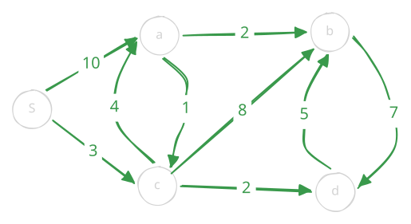

$\newcommand{\Path}[2]{ #1 \rightsquigarrow #2 }$
Dijkstra’s Algorithm
Let $n = |V|$ and $m = |E|$. So far here is the story we have. We want to solve single source shortest path (SSSP). If the weights were small we can do breadth first search. If we are guaranteed the graph is a DAG, then we can use DAG relaxation and topological sort. Finally, if we had no assumptions, then we had a slow algorithm, where we used Bellman-Ford. We still do not know a linear time algorithm to solve the general problem. Today, if we are guaranteed non-negative weights, we can get something that is pretty close to linear.
| Algorithm | Graph Type | SSSP Complexity |
|---|---|---|
| Breadth-first search (BFS) | Unweighted graphs | $O(n + m)$ |
| DAG shortest paths (topological order) | Directed acyclic graphs with arbitrary edge weights | $O(n + m)$ |
| Bellman–Ford | General Graphs | $O(n(n + m))$ |
| Dijkstra’s algorithm (Today) | Graphs with nonnegative edge weights | $O((n + m) \log n)$ |
There are two key ideas really. First, we start with BFS. The reason BFS does not work for us is because in a weighted graph the idea of level sets falls apart. Nodes two edges away could be closer to a source than a node one edge away with a higher weight. So the first idea is that if we can traverse nodes in increasing order of distance from the source node. If we can get nodes in this order, we can relax them like above and we will be done.
Changeable Priority Queue
So let’s say I have a data structure that implements the following API for me.
insert(id, key)->(): The regular insert operation of a priority queue.delete_min()->(id, key): Removes and returns theid, keyof the tuple with the minimum key value.change_key_val(id, key)->(): Changes thekeyassociated with the givenidand restores heap order. For Dijkstra’s algorithm, we only need to decrease keys.is_empty()->bool: Returns whether the queue is empty.
We have already learned how to do the first two operations using priority queues in this class. For the third operation, we can use a data structure implementing the set API to keep track of each vertex’s position in the heap. A direct access array works fine if the vertex IDs are numbered from $0$ to $n-1$. Whenever we swap heap entries, we update their positions in the array. This lets us find an entry in constant time, decrease its key, and bubble it up in $O(\log n)$ time.
Algorithm
Equipped with this data structure we are ready to give you the algorithm.
Assume all edge weights are nonnegative. Here Adj[u] contains pairs (v, weight) for edges from u to v.
We write $d(s,u)$ for the current distance estimate from $s$ to $u$, stored as d[s, u] in the pseudocode.
Initially, $d(s,s) = 0$ and $d(s,u) = \infty$ for every $u \ne s$.
def dijkstra(V, Adj, s):
# Initialize distances and parents.
d = {}
parent = {}
for u in V:
d[s, u] = float("inf")
parent[u] = None
d[s, s] = 0
# Initialize the queue with every vertex, keyed by its distance.
Q = ChangeablePriorityQueue()
for u in V:
Q.insert(u, d[s, u])
# Repeatedly extract the closest vertex and relax its outgoing edges.
while not Q.is_empty():
u, _ = Q.delete_min()
if d[s, u] == float("inf"):
break # All remaining vertices are unreachable from s.
for v, weight in Adj[u]:
if d[s, v] > d[s, u] + weight:
d[s, v] = d[s, u] + weight
parent[v] = u
Q.change_key_val(v, d[s, v])
return d, parentWhen we remove a vertex from the queue, its distance is final.
With nonnegative weights, a later relaxation cannot improve that distance, so every call to change_key_val refers to a vertex still in the queue.
Unreachable vertices keep distance $\infty$ and parent None.
Walkthrough

Initialize $d(s,s) = 0$ and all other distance estimates to $\infty$. Insert every vertex into the queue with its distance estimate as its key. Each row below shows the estimates after extracting the indicated vertex and relaxing its outgoing edges.
| Extracted vertex | $d(s,s)$ | $d(s,a)$ | $d(s,b)$ | $d(s,c)$ | $d(s,d)$ |
|---|---|---|---|---|---|
| Initialization | $0$ | $\infty$ | $\infty$ | $\infty$ | $\infty$ |
| $s$ | $0$ | $10$ | $\infty$ | $3$ | $\infty$ |
| $c$ | $0$ | $7$ | $11$ | $3$ | $5$ |
| $d$ | $0$ | $7$ | $10$ | $3$ | $5$ |
| $a$ | $0$ | $7$ | $9$ | $3$ | $5$ |
| $b$ | $0$ | $7$ | $9$ | $3$ | $5$ |
- Extract $s$ with distance $0$. Its outgoing edges give $d(s,a) = 10$ and $d(s,c) = 3$.
- Extract $c$ with distance $3$. The edge to $a$ improves $d(s,a)$ from $10$ to $3 + 4 = 7$. The other edges give $d(s,b) = 3 + 8 = 11$ and $d(s,d) = 3 + 2 = 5$.
- Extract $d$ with distance $5$. The edge to $b$ improves $d(s,b)$ from $11$ to $5 + 5 = 10$.
- Extract $a$ with distance $7$. The edge to $b$ improves $d(s,b)$ again, from $10$ to $7 + 2 = 9$. The edge to $c$ offers $7 + 1 = 8$, which does not improve its distance of $3$.
- Extract $b$ with distance $9$. The edge to $d$ offers $9 + 7 = 16$, which does not improve its distance of $5$. The queue is now empty.
The final parent pointers are $\operatorname{parent}[c] = s$, $\operatorname{parent}[a] = c$, $\operatorname{parent}[d] = c$, and $\operatorname{parent}[b] = a$. For example, the shortest path to $b$ is $s \to c \to a \to b$, with total weight $3 + 4 + 2 = 9$.